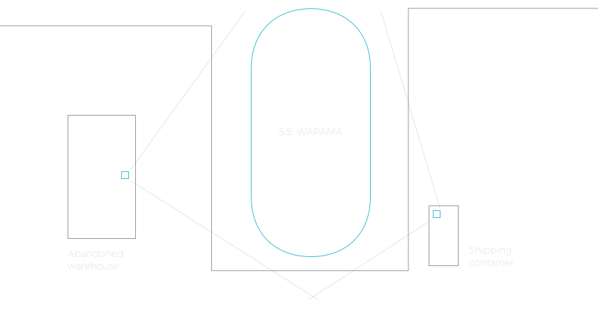

The National Park Service administers the Historic American Buildings Survey and the Historic American Engineering Record to document and preserve great historic architectural, engineering, and landscape feats. The S.S. Wapama, a 204-foot a wooden steam schooner used to serve the Pacific Coast lumber trade of the early- to mid-1900s, had become so severely weathered that the NPS elected to dismantle it. Significant parts of the ship were moved to historical exhibits at the San Francisco Maritime National Historic Park.
Production Lead. Requiring a timelapse camera system that could capture the three month deconstruction, I designed and installed a custom system, and managed a small team to run it. Despite battling a SF Bay location with rough conditions, the project was completed successfully. The deliverables are held in the HABS HAER Federal Archives.
Dry docked at the Port of Richmond, California, shooting this ship posed a number of logistical challenges: there were few secure areas and vantage points, and little to no available power. Paired with salty air, strong wind, and heavy fog, capturing the three-month deconstruction process required creative adaptability.
Camera A: A large DSLR placed in an abandoned warehouse. Tapping power from a nearby semi-functioning incandescent bulb socket, it was routed through a UPS for reliability, and piped directly into the battery port of the camera. To combat the salty air (which would quickly cloud the optics), a low-speed fan was placed next to the lens to maintain a buffer of dry air between the lens and the open window.
Camera B: A GoPro Black, with a mounting, power, and weatherproofing system that I fabricated. Using a rare earth magnets, it was attached to the side of a shipping container. The waterproof housing was modified to accept a constant power stream, and connected to a custom power system comprised of a car battery, solar trickle charger, and step-down converter, all tucked within a weatherproof box.